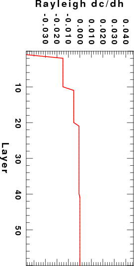
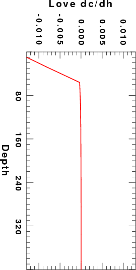

The detailed theory is given in surf.pdf. The discussion shows how the program surf96 procides the required partial derivatives, especially those for the group velocity partials which are obtained numerically and are thus not available from the eigenfunciton programs in PROGRAMS.330/VOLIII/src, e.g., sregn96 and slegn96.
The complete set of scripts for running the programs are given in DIST.tgz. After downloading, upack using the command:
gunzip -c DISP.tgz | tar xvf -This will create the subdirectory SWKERNELS/DIST. cd SWKERNELS/DIST. There are three subdirectories: EXAMPLE_1 and EXAMPLE_2 which have the control files for the two examples in the next section, and Source. The subdirectory Source has three files: srfker96.f, tMakefile and tmpjsamat.f. The last two are used in the testing section. If you do not wish to upgrade the CPS package, you can just compile and run the srfker96.f with the following gfortran command:
The first example is in the subdirectory EXAMPLE_1. In this directory you will find the following files: sobs.d, CUS.mod and tdisp.d. The CUS.mod is a model file in the model96 format, the tdisp.d is a dispersion file, with fake entries. The only required features are the wave type, group velocity, mode and period entries. The sobs.d is the control file for the program surf96.
Given these files, run the following sequence of commands:
surf96 39 surf96 1 srfker96 > srfker96.txt surf96 39The surf96 39 cleans up temporaty files, surf96 1 computes the partials, and srfker96 provides the desired kernels. The control file sobs.d is
4.99999989E-03 4.99999989E-03 0.0000000 4.99999989E-03 0.0000000
1 1 1 1 1 1 1 0 1 0
CUS.mod
tdisp.d
The velocity model CUS.mod is:
MODEL.01 CUS Model with Q from simple gamma values ISOTROPIC KGS FLAT EARTH 1-D CONSTANT VELOCITY LINE08 LINE09 LINE10 LINE11 H(KM) VP(KM/S) VS(KM/S) RHO(GM/CC) QP QS ETAP ETAS FREFP FREFS 1.0000 5.0000 2.8900 2.5000 0.172E-02 0.387E-02 0.00 0.00 1.00 1.00 9.0000 6.1000 3.5200 2.7300 0.160E-02 0.363E-02 0.00 0.00 1.00 1.00 10.0000 6.4000 3.7000 2.8200 0.149E-02 0.336E-02 0.00 0.00 1.00 1.00 20.0000 6.7000 3.8700 2.9020 0.000E-04 0.000E-04 0.00 0.00 1.00 1.00 0.0000 8.1500 4.7000 3.3640 0.194E-02 0.431E-02 0.00 0.00 1.00 1.00and the dispersion file tdisp.d is
SURF96 L U X 0 10.0000 4.0000 0.1000 SURF96 R U X 0 10.0000 4.0000 0.1000
and the output of srfker96 is srfker96.txt
___________________________________________________________________________________________
Elastic Love wave: Period= 10.000 Mode = 0 C= 3.697 U= 3.471
LAYER THICK dc/db dU/db dc/dh dU/dh
1 1.000 5.438E-02 9.366E-02 -5.011E-02 -7.176E-02
2 9.000 5.469E-01 8.137E-01 -1.346E-02 -7.754E-03
3 10.000 3.361E-01 2.380E-01 -4.711E-03 2.603E-03
4 20.000 1.517E-01 -1.027E-01 -1.102E-03 2.980E-03
5 0.000 5.138E-03 -1.944E-02 0.000E+00 0.000E+00
___________________________________________________________________________________________
Anelastic Love wave: Period= 10.000 Mode = 0 C= 3.688 U= 3.466 GAMMA= 2.731E-04
LAYER THICK dc/db dU/db dc/dh dU/dh dc/dQbi dU/dQbi dg/dQbi
1 1.000 5.422E-02 9.363E-02 -5.011E-02 -7.176E-02 -1.152E-01 -7.065E-02 3.613E-03
2 9.000 5.454E-01 8.133E-01 -1.346E-02 -7.754E-03 -1.411E+00 -8.655E-01 4.425E-02
3 10.000 3.353E-01 2.374E-01 -4.711E-03 2.603E-03 -9.116E-01 -5.591E-01 2.859E-02
4 20.000 1.517E-01 -1.031E-01 -1.102E-03 2.980E-03 -4.304E-01 -2.640E-01 1.350E-02
5 0.000 5.122E-03 -1.949E-02 0.000E+00 0.000E+00 -1.770E-02 -1.086E-02 5.551E-04
___________________________________________________________________________________________
Elastic Rayleigh wave: Period= 10.000 Mode = 0 C= 3.341 U= 3.111
LAYER THICK dc/da dc/db dU/da dU/db dC/dh dU/dh
1 1.000 2.239E-02 2.732E-02 4.218E-02 4.471E-02 -4.678E-02 -6.223E-02
2 9.000 8.043E-02 2.548E-01 6.769E-02 6.575E-01 -1.478E-02 -1.451E-02
3 10.000 7.740E-03 3.729E-01 -1.278E-02 3.370E-01 -5.335E-03 5.341E-03
4 20.000 6.406E-04 1.460E-01 -3.060E-03 -2.495E-01 -6.882E-04 3.490E-03
5 0.000 7.467E-06 2.250E-03 -5.734E-05 -1.402E-02 0.000E+00 0.000E+00
___________________________________________________________________________________________
Anelastic Rayleigh wave: Period= 10.000 Mode = 0 C= 3.334 U= 3.107 GAMMA= 2.616E-04
LAYER THICK dc/da dc/db dU/da dU/db dc/dh dU/dh dc/dQai dc/dQbi dU/dQai dU/dQbi dg/dQai dg/dQbi
1 1.000 2.237E-02 2.725E-02 4.219E-02 4.469E-02 -4.678E-02 -6.223E-02 -8.207E-02 -5.788E-02 -5.077E-02 -3.581E-02 3.152E-03 2.223E-03
2 9.000 8.033E-02 2.541E-01 6.762E-02 6.576E-01 -1.478E-02 -1.451E-02 -3.596E-01 -6.574E-01 -2.225E-01 -4.067E-01 1.381E-02 2.525E-02
3 10.000 7.731E-03 3.720E-01 -1.282E-02 3.365E-01 -5.335E-03 5.341E-03 -3.630E-02 -1.011E+00 -2.246E-02 -6.257E-01 1.394E-03 3.884E-02
4 20.000 6.406E-04 1.460E-01 -3.065E-03 -2.500E-01 -6.882E-04 3.490E-03 -3.146E-03 -4.140E-01 -1.946E-03 -2.561E-01 1.208E-04 1.590E-02
5 0.000 7.457E-06 2.243E-03 -5.744E-05 -1.405E-02 0.000E+00 0.000E+00 -4.461E-05 -7.750E-03 -2.760E-05 -4.795E-03 1.713E-06 2.976E-04
___________________________________________________________________________________________
Note that there are entries for each line of the dispersion file which contain listings of the partial derivatives without and with the effects of Q.
The second example uses the same velocity model as the CUS.mod, but now splitting each layer into 1 km sup-layers, so that the partial derivatives can be plotted. The data set is in the subdirectory EXAMPLE_2. The only difference is that now sobs.d is
4.99999989E-03 4.99999989E-03 0.0000000 4.99999989E-03 0.0000000
1 1 1 1 1 1 1 0 1 0
dCUS.mod
tdisp.d
The same commands are run, and the output is in the file srfker96.txt.
No program was written to make nice plots. Rather I used the script DOPLT in EXAMPLE_2 to make the following figures for the fundamental modes at a period of 10 seconds. Since the layers were 10 km thick, the Layer index is essentially the depth in km. Note that this is not the best plot since a staircase plot, similar to velocity models should actually be used.
| |
|||
| |
|
||
|  | |||
| |
|
||
| |
|
cat top.mod 0.mod bot.mod > model.0
Elastic Love wave: Period= 14.200 Mode = 0 C= 3.637 U= 3.405
LAYER THICK dc/db dU/db dc/dh dU/dh
1 20.000 7.724E-01 8.195E-01 -6.194E-03 3.115E-03
2 20.000 3.027E-01 1.728E-01 -6.194E-03 3.115E-03
3 0.000 2.583E-02 -4.096E-02 0.000E+00 0.000E+00
___________________________________________________________________________________________
Anelastic Love wave: Period= 14.200 Mode = 0 C= 3.604 U= 3.383 GAMMA= 6.498E-04
LAYER THICK dc/db dU/db dc/dh dU/dh dc/dQbi dU/dQbi dg/dQbi
1 20.000 7.659E-01 8.156E-01 -6.194E-03 3.115E-03 -2.283E+00 -1.520E+00 4.523E-02
2 20.000 3.001E-01 1.705E-01 -6.194E-03 3.115E-03 -8.947E-01 -5.955E-01 1.772E-02
3.041e-01 1.859e-01 -5.853e-03 3.199e-03 -8.947e-01 -5.955e-01 1.772e-02
3 0.000 2.561E-02 -4.145E-02 0.000E+00 0.000E+00 -1.025E-01 -6.824E-02 2.031E-03
___________________________________________________________________________________________
Elastic Rayleigh wave: Period= 14.200 Mode = 0 C= 3.262 U= 3.080
LAYER THICK dc/da dc/db dU/da dU/db dC/dh dU/dh
1 20.000 8.013E-02 5.143E-01 4.639E-02 8.997E-01 -4.813E-03 1.197E-02
2 20.000 3.168E-03 3.086E-01 -1.292E-02 -1.442E-01 -4.813E-03 1.197E-02
3 0.000 1.064E-04 1.392E-02 -5.494E-04 -5.162E-02 0.000E+00 0.000E+00
___________________________________________________________________________________________
Anelastic Rayleigh wave: Period= 14.200 Mode = 0 C= 3.233 U= 3.061 GAMMA= 7.183E-04
LAYER THICK dc/da dc/db dU/da dU/db dc/dh dU/dh dc/dQai dc/dQbi dU/dQai dU/dQbi dg/dQai dg/dQbi
1 20.000 7.946E-02 5.099E-01 4.578E-02 8.991E-01 -4.813E-03 1.197E-02 -4.128E-01 -1.520E+00 -2.728E-01 -1.005E+00 1.016E-02 3.743E-02
2 20.000 3.141E-03 3.060E-01 -1.303E-02 -1.482E-01 -4.813E-03 1.197E-02 -1.632E-02 -9.122E-01 -1.079E-02 -6.028E-01 4.018E-04 2.246E-02
3.028e-03 3.029e-01 -1.330e-02 -1.504e-01 -4.341e-03 1.171e-02 -1.633e-02 -9.122e-01 -1.080e-02 -6.028e-01 4.018e-04 2.246e-02
3 0.000 1.055E-04 1.380E-02 -5.535E-04 -5.204E-02 0.000E+00 0.000E+00 -7.326E-04 -5.526E-02 -4.841E-04 -3.652E-02 1.804E-05 1.361E-03
___________________________________________________________________________________________
The kernels given in the Computer Programs in Seismology 3.30
(CPS330) by the programs slegn96/sregn96/sdpder96 differ
from those given in papers by Saito anbd others in a significant
way. Those papers give the kernel at a given depth. The CPS330
values are the kernels for a given layer, which are obtained from
the depth kernels through integration:
Kernel(CPS330) = integral_over_layer_of
thickness_H Kernel(depth) dz.
Thus the kernel values given here will be larger than those of
Saito by a factor related to the layer thickness.
The following example computes the kernels using a modified
AK135 velocity model, modified since the liquid core is ignored.
The data set is in the subdirectory EXAMPLE_3. The other
difference is that the plot of the kernels is as a function of the
depth of the mid-point of the layer.
To make these plots, execute the following commands:
surf96 39 surf96 1 srfker96 > srfker96.txt surf96 39If you look at the sobs.d file in EXAMPLE_3 you will see that the dispersion file is for a single period of 50 seconds. If you wish to see the kernels for other periods, just extract the Love and Rayleigh group velocities from the file out.dsp and place them in the tdisp used by surf96.
DOPLTz (note that the script DOPLTz forces the maximum depth to be 400 km)
 |
 |
||
| |
|
||
|  | |||
 |
|||
| |
|
||
| |